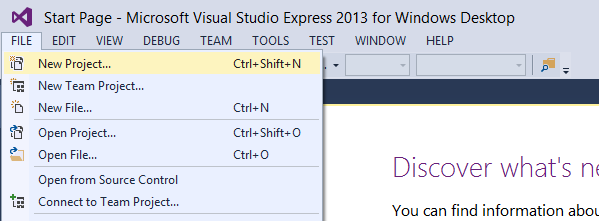
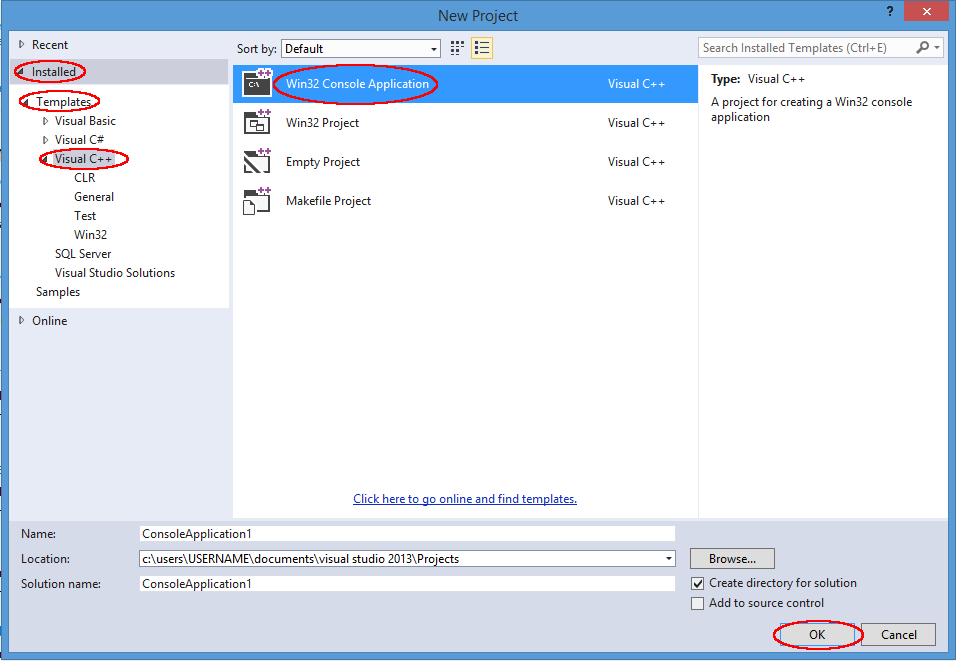
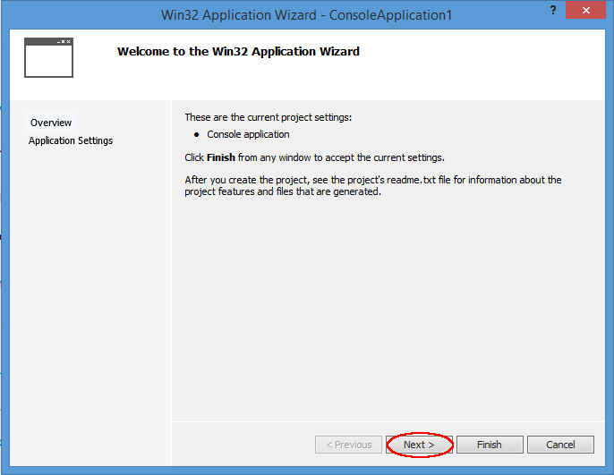
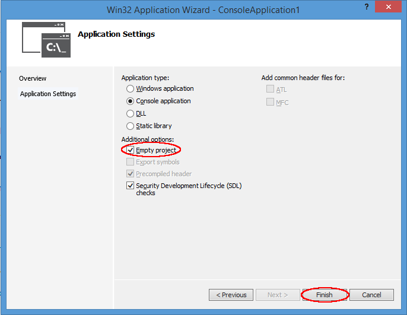
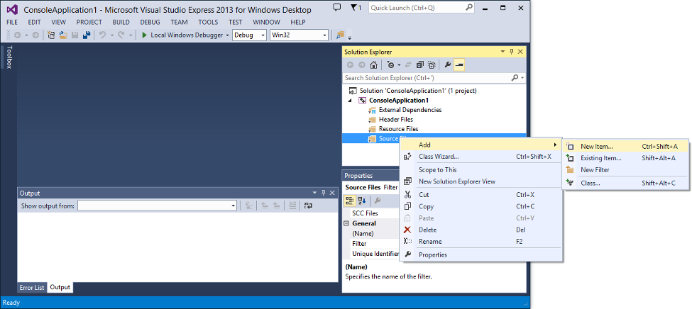
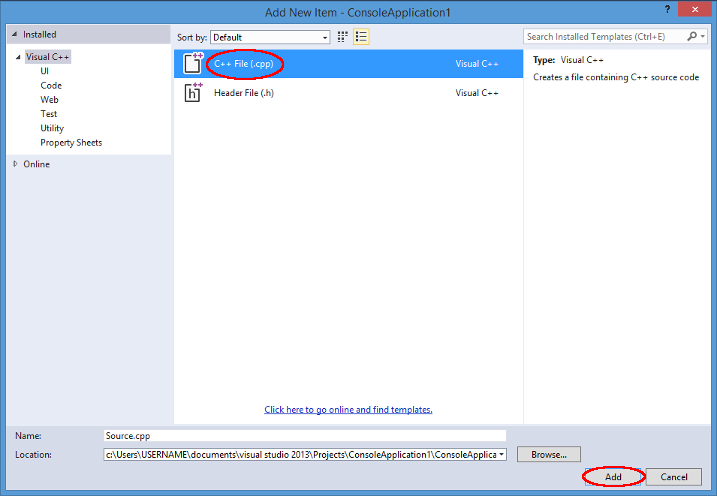

Visual Studio Express
Visual Studio Express for Windows Desktop is a tool from Microsoft that integrates a development interface and the toolchains needed to compile a variety of programming languages.It is a reduced version of Visual Studio available as a free program to download from:
https://visualstudio.microsoft.com/ Note that Express comes in a variety of versions. The one needed to compile console programs is Express for Windows Desktop (neither Express for Web nor Express for Windows will do).
Installation
Run the executable (if it is an ISO, open the ISO file and run the executable within). Then follow the instructions given by the installer.Support for C++11
The C++ compiler integrated with Visual Studio Express supports many features introduced by the recent standard, enough to follow the tutorials in this site off the box.Console Application
Both Visual Studio and its free Express version are designed to build a variety of applications. For the tutorials, we are interested in compiling and running simple console applications.To compile and run a simple console application in Visual Studio Express:
File -> New Project... 
Here, on the left-hand side, select
Templates -> Visual C++. Then, on the central part, select Win32 Console Application:
On the bottom, you have the option to give a name to the project and select a location where the files will be stored. The default options are fine, but you can also change them to better fit your needs.
Now click
[OK]
This will open the Win32 Application Wizard:

Click
[Next].
Leave "Console application" selected, and in Additional options select Empty project. Other options are not needed, but won't bother either.
Now we have an empty project. We need to add a file to it. For that:
On the Solution Explorer at right, look for Source Files under your application. Right-click -> Add -> New Item...

Here, add a new C++ file:

You can give it any name you want with a
.cpp extension, such as example.cpp. After clicking OK, the main window will display en editor to edit this new C++ file. Write the following in it: |
|
Then, to compile and run this application simply press
Ctrl+F5.You can edit this file as much as needed and trigger a new Compile-and-Run every time when ready.